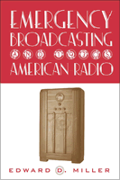

Radio, the nation, and the rise of the voice in broadcasting, in a clearly written, significant history of the birth of the first mass medium
Radio, the nation, and the rise of the voice in broadcasting, in a clearly written, significant history of the birth of the first mass medium


 Radio, the nation, and the rise of the voice in broadcasting, in a clearly written, significant history of the birth of the first mass medium
Radio, the nation, and the rise of the voice in broadcasting, in a clearly written, significant history of the birth of the first mass medium

|  |
Emergency Broadcasting and 1930s American RadioEdward D. Millerpaper EAN: 978-1-56639-993-7 (ISBN: 1-56639-993-9) |
"In an era dominated by television and increasingly focused on the Internet as the new kid on the media block, Miller offers a valuable history lesson by reminding us of the power once yielded by radio. The best inoculation against the hyperbolic claims of new media is to understand the commonalities as well as the unique features of the various media that have shaped public consciousness in the past century. In this still unfolding narrative, radio has often been overlooked or taken for granted. Miller helps us avoid these mistakes and should encourage us all to take another, closer listen to the voices in the ether."
—Larry Gross, Sol Worth Professor, The Annenberg School for Communication, University of Pennsylvania
The voice we hear on the radio—the voice with no body attached—is a key element in the history of media in the twentieth century. Before television and the internet, there was radio; and much of what defined the makeup of these newer media was influenced by the way radio was broadcast to people and the way people listened to it.
Emergency Broadcasting focuses on key moments in the history of early radio in order to come to an understanding of the role voice played in radio to describe national crises, a fictional invasion from outer space, and general entertainment. Taking the Hindenburg disaster, The War of the Worlds hoax, Franklin Roosevelt's Fireside Chats, and the serial mystery The Shadow as his focal points, Edward Miller illustrates how the radio, for the first time, instantly communicated to a mass audience, and how that communication—where the voice counts more than the image—is still at work today in television and the World Wide Web.
Theoretically sophisticated, yet grounded in historical detail, Emergency Broadcasting offers a unique examination of radio and at the same time develops a complex understanding of the media whose birth is owed to the innovations—and disembodied power—established by it.
Excerpt available at www.temple.edu/tempress
"Miller's book is a wholly original contribution to the study of both early American and contemporary radio. Perhaps his greatest strength is his ability to integrate theory with historical evidence. Miller's reading of both the "War of the Worlds" and FDR's Fireside Chats as being inflected by the radio reporting of the Hindenberg disaster is as unique as it is valuable. Emergency Broadcasting belongs alongside other significant radio books such as Noise Water Meat and Wireless Imagination."
—Martin Spinelli, Ph.D., Professor of Radio and Media Studies, Brooklyn College of the City University of New York
"Miller adds a theoretical context with which to assess these programs, and he effectively ties his findings to radio (and Internet) content available today. His approach is surely timely for he is really exploring how radio dealt (and deals) with real or imagined threats to national security."
—The Journalism and Mass Communication Educator
Read "With Some Frequency," a review from The New Yorker, 14 April 2003, written by Mark Rozzo (pdf).
Acknowledgments
1. Introduction: Thrown Voices
2. The Uncanny Home and the Transmitted Voice
3. The Recital of the Hindenburg Disaster
4. Radio and the Voice and Body of the President
5. The Case of the "War of the Worlds"
6. Echo's Broadcast: Desire and Disembodiment
7. Body and Space in the Radio and Internet
Notes
Bibliography
Index
 | Edward D. Miller is Chair of the Department of Media Culture at The College of Staten Island/CUNY. |
Mass Media and Communications
American Studies
History
© 2015 Temple University. All Rights Reserved. This page: http://www.temple.edu/tempress/titles/1619_reg.html.